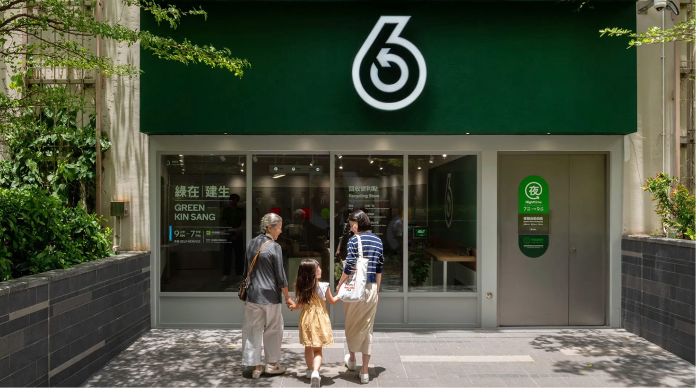

Jane's Channel
Campus Projects
Work Projects
Daily Record
Campus Projects 校园项目
Service design 服务设计
|
Package design 包装设计
|
Book design 书籍设计
|
Cutural creative design 文创设计
|
LOGO design 商标设计
|
Illustration 插画

GREEN@‘SCHOOL’绿在校园
Service design 服务设计